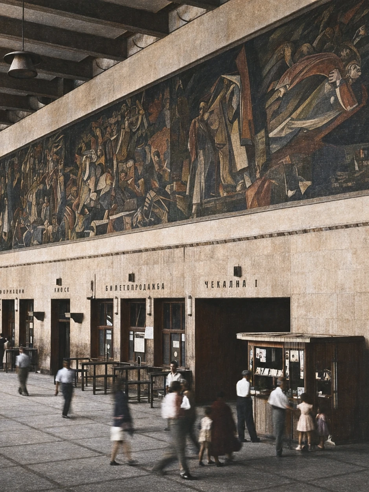

The station wall
Borko Lazeski’s fresco ran almost the length of Skopje’s old railway concourse, above the doors to the platforms. The archival photograph shows how large its figures were compared with the passengers below.
Lazeski began the commission in 1951. In her 1979 monograph, Sonja Abadžieva Dimitrova describes how he worked through years of drawings, simplifying the figures into angular planes. Lazeski and his assistants spent six months working in wet plaster. Unveiled in 1956, The National Liberation War depicted seven episodes of occupation, resistance, and liberation. Lazeski had fought with the Partisans and had witnessed some of the events he painted.
In the Prilep version, red horses overlap blue-green bodies. A bent leg and a horse’s flank meet in a single diagonal. Those large angles and blocks of color helped make the scene readable from across the hall.

Painting for public buildings
Lazeski was born in Prilep in 1917. He studied in Belgrade and completed his training in Sofia in 1943. After the war, he went to Paris, where he studied fresco, mosaic, and stained glass and took classes with the Cubist painter André Lhote. Back in Skopje, he became the first manager and organizer of what is now the National Gallery of Macedonia, alongside a founding generation that included Nikola Martinoski and Lazar Ličenoski.
Before the railway commission, Lazeski painted Ilinden 1903 for the Army Hall in Skopje. In the preparatory studies, he worked out the raised arms, turned torsos, and bent legs as individual poses.
Lazeski spoke of fresco as a medium that belonged to the people who lived around it. At the station, his audience included anyone passing through on the way to a train.
The 1963 earthquake destroyed the original fresco. Lazeski and his assistants later reworked the composition across two lobbies at the Marko Cepenkov Cultural Center in Prilep. The Prilep version was unveiled in 1993, after his death.



Stained glass at Makedonium
Lazeski designed the stained glass for Makedonium in Kruševo, which opened in 1974. The glass sits at the ends of deep concrete recesses and casts patches of green, blue, and yellow onto the dome’s interior.
Lazeski taught at the academy of fine arts in Baghdad and made murals in Mexico City, including a 1983 work on the Non-Aligned Movement. In July 2026, conservators in Kruševo assessed the condition of his stained glass and its metal supports.
Sources
Sonja Abadžieva Dimitrova. Borko Lazeski, 1979. Monograph, including the station commission, preparatory drawings, and fresco technique.
National Gallery of Macedonia. Institutional history. Lazeski’s role in establishing the gallery.
Ibrahimi Collection. Borko Lazeski chronology. Training, wartime activity, and exhibition history.
Spomenik Database. Skopje’s railway station mural. Archival photographs, the 1963 earthquake, and the Prilep version. The railway station photograph records Lazeski’s The National Liberation War, completed in 1956.
Which Side Are You On? Exhibition booklet. Teaching in Baghdad and mural commissions in Mexico City.
National Conservation Centre. Inspection of Lazeski’s stained glass at Makedonium, July 2026.